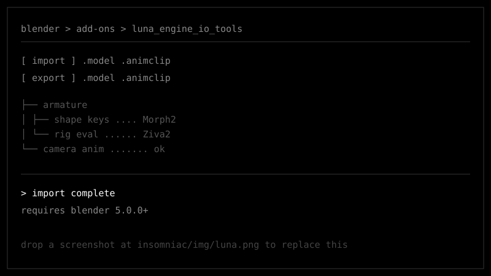

Luna Engine IO Tools
A Blender add-on for Luna Engine assets. Imports and exports compiled .model files
and .animclip animations directly inside Blender, so meshes and animations can go
out of the game, get edited, and go back in.
More info
- Import one or more compiled
.modelfiles; export selected model hierarchies back to Luna Engine format. - Import
.animclipfiles and apply them to an existing armature or camera. - Shape key management for Morph2 deformations.
- Ziva2 rig evaluation tools.
- Camera animation support alongside skeletal animation.
Requires Blender 5.0.0 or newer. Python 3.x ships with Blender — no external dependencies.
Install download the repo, put the files in a folder named
luna_engine_io_tools, then install it from Blender's Add-ons preferences.